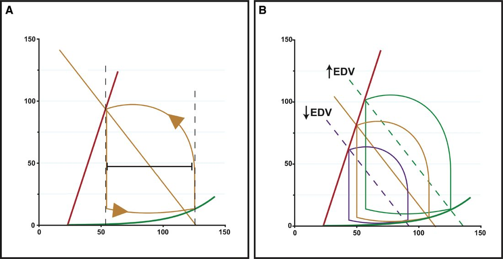
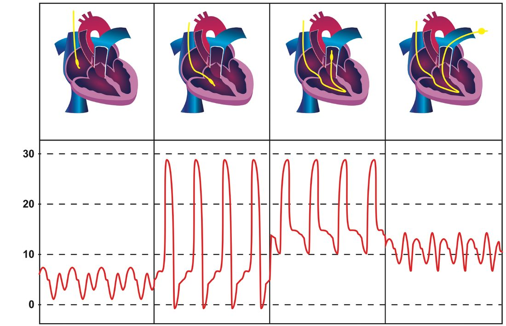
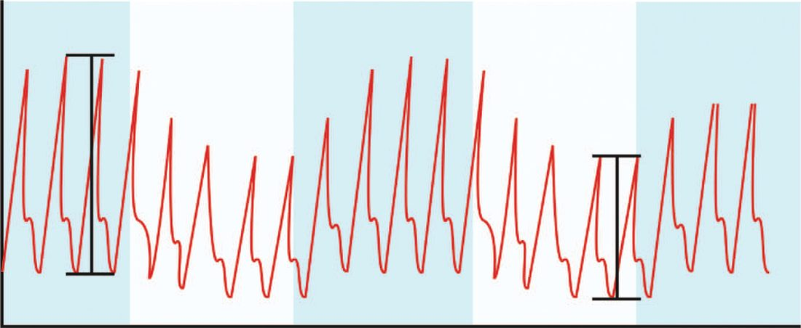

Shock
Summary
- Shock is a systemic state of low tissue perfusion that is inadequate for normal cellular respiration; with insufficient delivery of oxygen and glucose, cells switch from aerobic to anaerobic metabolism, and if perfusion is not restored in a timely fashion, cell death ensues [1]. Shock is the most common cause of death of surgical patients, death may occur rapidly because of a profound state of shock, or later because of the consequences of organ ischaemia and reperfusion injury [1]. "Cellular shock" describes the resulting failure of normal cellular processes, including oxygen processing [2].
- Haemorrhage is the most common cause of shock in the injured patient, but non-haemorrhagic causes (tension pneumothorax, cardiac tamponade, neurogenic, septic) must be actively considered [3].
- Shock occurs at three conceptual levels of the cardiovascular system: the heart, where the abnormality may be extrinsic or intrinsic; the large and medium vessels, where haemorrhage and loss of blood volume cause it; and the small vessels, where neurological dysfunction or sepsis causes vasodilatation and maldistribution of blood volume [4].
- There is no single NICE guideline on shock.
- UK guidance is split by cause and by fluid: CG174 governs intravenous fluid therapy in adults in hospital and defines the indicators for urgent fluid resuscitation; NG39 governs volume resuscitation in the actively bleeding trauma patient and is the one document that forbids crystalloid outright; NG24 sets the transfusion thresholds and doses for the patient who is not in major haemorrhage; and NG253 covers suspected sepsis in people aged 16 or over.
- Reading them together produces a rule worth stating at the outset: the NICE fluid and transfusion thresholds cited in most textbooks apply only to patients who are not actively bleeding, because NG24's own recommendations explicitly exclude people who have major haemorrhage [5].
- For those patients, NG39 replaces them.
CG174's organising device is the 5 Rs (Resuscitation, Routine maintenance, Replacement, Redistribution and Reassessment) and its first instruction is that fluid and electrolyte needs are assessed and managed as part of every ward review, with intravenous fluid given only where oral or enteral routes cannot meet the need, and stopped as soon as possible [6].
Definition
Shock is inadequate perfusion of tissue relative to metabolic demand; blood delivers oxygen along with countless nutrients, buffers, hormones, and electrolytes, so oxygen delivery alone is an oversimplified way to conceptualise the problem [4]. Sabiston makes that point explicitly: the definition of shock is inadequate tissue perfusion, but many clinicians have incorrectly simplified it to inadequate tissue oxygenation [4].
Classification by initiating mechanism
Bailey & Love classifies shock by the initiating mechanism, noting that all states are characterised by systemic tissue hypoperfusion and that different states may coexist in the same patient [1]. Its five categories are haemorrhagic/hypovolaemic, cardiogenic, obstructive, distributive and endocrine shock.
Hypovolaemic shock is due to reduced circulating volume, from haemorrhagic or non-haemorrhagic causes, poor fluid intake, vomiting, diarrhoea, urinary loss as in diabetes, evaporation, or "third-spacing" into the gastrointestinal tract and interstitium as in bowel obstruction or pancreatitis. Hypovolaemia is the most common form of shock, and to some degree is a component of all other forms, so absolute or relative hypovolaemia must be excluded or treated regardless of cause [1]. Cardiogenic shock is primary failure of the heart to pump, from myocardial infarction, dysrhythmia, valvular disease, blunt myocardial injury or cardiomyopathy, or from myocardial depression caused by endogenous factors such as bacterial and humoral agents released in sepsis, or exogenous ones such as drugs [1]. Obstructive shock is reduced preload from mechanical obstruction of cardiac filling, cardiac tamponade, tension pneumothorax, massive pulmonary embolus or air embolus [1]. Distributive shock covers septic shock, anaphylaxis and spinal cord injury, where inadequate organ perfusion is accompanied by vascular dilatation, hypotension, low systemic vascular resistance, inadequate afterload and an abnormally high cardiac output [1]. Endocrine shock may present as a combination of the others: hypothyroidism produces a picture like neurogenic shock through disordered vascular and cardiac responsiveness to catecholamines, thyrotoxicosis may cause high-output cardiac failure, and adrenal insufficiency causes shock through hypovolaemia and a poor response to circulating and exogenous catecholamines, whether from pre-existing Addison's disease or a relative insufficiency in systemic sepsis [1].
The haemodynamic signature of each is what separates them at the bedside [1]:
| Hypovolaemic | Cardiogenic | Obstructive | Distributive | |
|---|---|---|---|---|
| Cardiac output | Low | Low | Low | High |
| Systemic vascular resistance | High | High | High | Low |
| Venous pressure | Low | High | High | Low |
| Mixed venous saturation | Low | Low | Low | High |
| Base deficit | High | High | High | High |
Table reformats the cardiovascular and metabolic characteristics of shock [1]. The ABSITE account of the same distinctions adds neurogenic shock (low CVP and wedge pressure, low cardiac output, low systemic vascular resistance) and adrenal insufficiency, with low or normal filling pressures, low cardiac output and low resistance [7].
Pathophysiology
- As perfusion falls, cells switch from aerobic to anaerobic metabolism, whose product is lactic acid rather than carbon dioxide; when enough tissue is underperfused the accumulation of lactic acid produces systemic metabolic acidosis [1].
- As intracellular glucose is exhausted, anaerobic respiration ceases, the sodium/potassium pumps of the cell membrane and organelles fail, intracellular lysosomes release autodigestive enzymes and cell lysis ensues, releasing intracellular contents including potassium into the bloodstream [1].
- At the microvascular level, hypoxia and acidosis activate complement and prime leukocytes, generating oxygen free radicals and cytokines that injure capillary endothelium; damaged endothelium loses its integrity and becomes leaky, and fluid escaping between endothelial cells produces tissue oedema that further exacerbates cellular hypoxia [1].
- Systemically, falling preload and afterload trigger a baroreceptor response with increased sympathetic activity and catecholamine release, giving tachycardia and vasoconstriction except in sepsis; the metabolic acidosis and sympathetic response increase respiratory rate and minute ventilation to excrete carbon dioxide, producing a compensatory respiratory alkalosis; reduced renal perfusion pressure reduces glomerular filtration and urine output and stimulates the renin–angiotensin–aldosterone axis; and vasopressin and cortisol are released, contributing to sodium and water resorption and sensitising cells to catecholamines [1].
- The ABSITE account divides the same response into a rapid component of adrenaline and noradrenaline release and a sustained component of renin-angiotensin activation, ADH release and ACTH-driven cortisol rise [8].
- Sabiston notes that the earliest compensatory mechanism is the increase in sympathetic activity mediated by baroreceptors in the aortic arch, atria and carotid bodies, and that the various tissue beds are not affected equally, blood is shunted away from skin, skeletal muscle and the splanchnic bed [4].
Bleeding: arterial versus venous, and the two failure modes
- Arterial bleeding often stops temporarily through vessel spasm and thrombosis in adventitial tissue, but a lacerated rather than transected artery can bleed more, because spasm enlarges the defect; since arteries lack valves, blood pressure can fall early, before large-volume loss, so hypotension may precede tissue ischaemia and lactate and base deficit may remain normal [4].
- Venous bleeding is typically slower, allowing time for fluid recruitment from intracellular and interstitial spaces, so large volumes can be lost before hypotension occurs, but tissue ischaemia, with abnormal lactate and base deficit, develops during that process [4].
- Children compensate for large blood loss because of the higher water composition of their bodies, often exhibiting only tachycardia until a tipping point of rapid decline; elderly patients show almost the opposite physiology, decompensating at lower blood loss because of reduced cardiac compensation and fluid reserve recruitment [4].
Ischaemia–reperfusion, SIRS and multiple organ failure
- Bailey & Love's account of what happens after perfusion is restored is the part most often skipped.
- During systemic hypoperfusion, cellular and organ damage progresses from tissue hypoxia and local inflammation; further injury occurs once normal circulation is restored to those tissues, because the accumulated acid and potassium load causes direct myocardial depression, vascular dilatation and further hypotension, and molecules released from the interior of cells activate leukocytes [1].
- Those, together with complement, neutrophils and microvascular thrombi activated by the hypoxia, overwhelm the local anti-inflammatory response and are flushed back into the systemic circulation where they injure distant organs such as the lungs and kidneys, producing acute lung injury, acute kidney injury, cerebral oedema, multiple organ failure and death [1].
- The therapeutic implication is stark: reperfusion injury can currently only be attenuated by reducing the extent and duration of tissue hypoperfusion [1].
Multiple organ failure is defined as two or more failed organ systems, has no specific treatment beyond organ support with ventilation, cardiovascular support and haemofiltration or dialysis until recovery, and currently carries a mortality of 60%, which is why prevention by early aggressive identification and reversal of shock is vital [1]. Patients who remain in profound shock for a prolonged period become "unresuscitatable": myocardial cell death from poor coronary perfusion combines with myocardial depression from severe acidaemia and hyperkalaemia to give a poor cardiac output with limited response to fluids or inotropes, while the periphery loses the ability to maintain systemic vascular resistance and no longer responds to vasopressors, at which point death is inevitable [1].

Clinical features
- General recognition of shock: decreased blood pressure, increased pulse, cold, clammy, pale, sweating skin, and confusion, whether agitated or drowsy; young patients compensate, showing only decreased pulse pressure, tachycardia, and decreased urine output [2].
- Hypovolaemic shock arises from trauma, ruptured abdominal aortic aneurysm, ruptured ectopic pregnancy, postoperative haemorrhage, dehydration, burns, or pancreatitis [2].
- Anaphylactic shock presents with sudden onset after drug, blood product or latex exposure, with stridor or bronchospasm, angio-oedema, urticaria, and pruritus [2].
- Septic shock may mimic hypovolaemic shock, or in its earlier evolution present with a "septic" look (pyrexial, flushed, bounding pulses) before circulatory collapse [2].
- Cardiogenic shock presents with a history of recent surgery or trauma, chest pain, dyspnoea, palpitations, or new cardiac murmurs [2].
Compensated shock and the limits of the classical signs
- Bailey & Love stages shock by whether compensation is still holding, and its central warning is that compensated shock is clinically occult [1].
- In compensated shock there is adequate cardiovascular compensation to maintain central blood volume and preserve flow to the kidneys, lungs and brain; apart from tachycardia and cool peripheries there may be no other clinical sign of hypovolaemia.
- But that state is maintained only by reducing perfusion to skin, muscle and gut, whose cells are respiring anaerobically and sustaining ischaemic damage. Patients with occult hypoperfusion (metabolic acidosis despite normal urine output and normal cardiorespiratory vital signs) for more than 12 hours have a significantly higher mortality, infection rate and incidence of multiple organ failure [1].
- Loss of around 15% of circulating volume is within normal compensatory mechanisms, and blood pressure is usually well maintained and only falls after 30–40% of circulating volume has been lost [1].
| Compensated (mild) | Uncompensated (moderate) | Uncompensated (severe) | |
|---|---|---|---|
| Lactic acidosis | + | ++ | +++ |
| Urine output | Normal | Reduced | Anuric |
| Conscious level | Mild anxiety | Drowsy | Comatose |
| Respiratory rate | Increased | Increased | Laboured |
| Pulse rate | Increased | Increased | Increased |
| Blood pressure | Normal | Mild hypotension | Severe hypotension |
Table reformats the clinical features of shock by stage [1]. In moderate shock renal compensation fails and urine output dips below 0.5 mL/kg/hour, with patients drowsy and mildly confused; in severe shock there is profound tachycardia and hypotension, urine output falls to zero, and patients are unconscious with laboured respiration [1].
Three classical signs are unreliable, and Bailey & Love treats each in turn. Capillary refill varies so much in adults that it is not a specific marker, patients with short refill times may be in early shock, and in distributive septic shock the peripheries will be warm with brisk refill despite profound shock [1]. Tachycardia may not accompany shock at all: patients on beta-blockers or with implanted pacemakers cannot mount one, a pulse rate of 80 in a fit young adult whose normal rate is 50 is very abnormal, and in some young patients with penetrating trauma there may be a paradoxical bradycardia [1]. Blood pressure is one of the last signs of shock: children and fit young adults maintain it until the final stages by dramatic increases in stroke volume and vasoconstriction and can be in profound shock with a normal blood pressure, while an elderly hypertensive patient may present with a population-normal blood pressure yet be hypovolaemic and hypotensive relative to their own baseline [1].
Sabiston adds the evidence behind the heart rate caution. A rate above 100 beats/min has been used as a physical sign of bleeding, but Brasel and colleagues showed heart rate was neither sensitive nor specific for the need for emergent intervention, the need for red cell transfusion in the first 2 hours, or injury severity, and was not altered by the presence of hypotension [4]. "Relative bradycardia", defined as a heart rate below 100 with a simultaneous systolic below 90 mmHg, occurs in up to 44% of hypotensive patients who are not bleeding, and bleeding patients who show it have a lower mortality, though the protection has a floor, since patients with a heart rate below 60 are usually moribund, and bleeding patients with a heart rate of 60 to 90 have the highest survival rate [4].
Etiology
- The most common cause of shock in the injured patient is haemorrhage [3].
- Non-haemorrhagic causes of shock in trauma include tension pneumothorax, neurogenic or spinal injury, cardiac tamponade, cardiac contusion, sepsis from delayed presentation, and non-traumatic causes such as a pre-existing myocardial infarction or stroke that precipitated the injury [3].
- Rapidly reversible causes of cardiogenic shock include cardiac tamponade, arrhythmias, and tension pneumothorax; other causes include fluid overload and congestive heart failure, myocardial infarction, pulmonary embolism, endocarditis, aortic dissection, and decompensated valvular disease [2].
- In distributive shock the mechanism differs by cause: in anaphylaxis vasodilatation is due to histamine release, in high spinal cord injury it is failure of sympathetic outflow and vascular tone, and in sepsis it relates to release of bacterial products and activation of cellular and humoral immunity, with maldistribution of blood flow at the microvascular level, arteriovenous shunting and dysfunction of cellular oxygen utilisation [1]. In the later phases of septic shock there is hypovolaemia from fluid loss into interstitial spaces and there may be concomitant myocardial depression, complicating the clinical picture [1].
Diagnosis
- Blood pressure remains the most clinically useful monitoring measure for shock, though a combination of normalisation of serum lactate, base deficit, and pH along with haemorrhage control are useful resuscitation endpoints; Sabiston notes there is no single universally applicable end point of resuscitation [4].
- A low haemoglobin or haematocrit generally reflects severe blood loss when it occurs rapidly, but a normal or high level on initial presentation does not rule out significant bleeding, particularly before crystalloid administration [4].
- Bailey & Love states the reason: haemoglobin is a poor indicator of the degree of haemorrhage because it represents a concentration and not an absolute amount, in the early stages of rapid haemorrhage it is unchanged, because whole blood is lost, and only falls later as fluid shifts from the intracellular and interstitial spaces into the vascular compartment [1].
- The Shock Index, heart rate divided by systolic blood pressure, is a better marker of shock severity than heart rate or blood pressure alone and is useful across trauma, sepsis, obstetric, myocardial infarction and stroke aetiologies, and specifically in paediatric and geriatric populations.
- The Modified Shock Index, heart rate divided by mean arterial pressure, additionally accounts for diastolic pressure, and a rising value indicates low stroke volume and low systemic vascular resistance while a low value indicates a hyperdynamic state [4].
- Sabiston's verdict on both is instructive: they are statistically more accurate than any single parameter, but there is no substitute for the experienced clinician at the bedside, who in a few seconds weighs sex, age, GCS, mechanism and other parameters, and that, it suggests, may be why neither index has been widely adopted [4].
- Hypotension has traditionally been set arbitrarily at 90 mmHg and below; redefinition below 110 mmHg has been proposed, since a prehospital blood pressure below 110 mmHg was shown to mark an inflection point in mortality, with 15% of such patients eventually dying in hospital [4].
What lactate and base deficit actually mean
- Sabiston devotes a section to unsettling the standard account of lactate, and the correction matters clinically.
- Lactate has long been thought a byproduct of anaerobic metabolism and an unfavourable end waste product, but recent evidence indicates that lactate is an active metabolite, capable of moving between cells, tissues and organs, where it may be oxidised as fuel or reconverted to pyruvate or glucose.
- Increased lactate production as a result of anoxia or dysoxia now appears to be the exception rather than the rule [4].
- Lactate is being studied as a pseudohormone regulating the cellular redox state through the NAD⁺/NADH ratio, and it affects wound regeneration by promoting collagen deposition and neovascularisation [4].
- Two observations undercut the anaerobic story directly: in canine muscle, lactate is produced by moderate-intensity exercise when the oxygen supply is ample, and in climbers on the summit of Mount Everest, with a resting PO₂ of about 28 mmHg, blood lactate was essentially the same as at sea level [4].
- A high adrenergic stimulus alone raises lactate.
- Sabiston's conclusion is that the level of lactate, whether waste product or energy source, signifies tissue distress (from anaerobic conditions or from other factors) and that the liver is predominantly responsible for its metabolism, so liver disease affects the level [4].
- Base deficit, the number of millimoles of base required to correct the pH of a litre of whole blood to 7.4, correlates well with lactate at least in the first 24 hours after an insult.
- Rutherford showed in 1992 that a base deficit of 8 was associated with a 25% mortality in patients over 55 without head injury, or under 55 with head injury, and a persistently elevated base deficit is taken as an indication of ongoing shock [4].
- Recent literature suggests the time to correction matters, with return to normal within 48 hours associated with all-cause mortality after trauma [4].
- Two caveats attach: base deficit is commonly influenced by the chloride in resuscitation fluids, producing a hyperchloraemic non-anion-gap metabolic acidosis, and in renal failure it is a poor predictor, though a base deficit above 6 mmol/L in acute renal failure is associated with poor outcome [4].
Early gram-negative sepsis shows decreased insulin and increased glucose from impaired utilisation; late gram-negative sepsis shows increased insulin and increased glucose from insulin resistance; hyperglycaemia often precedes clinical sepsis [8]. Procalcitonin is elevated in sepsis with higher sensitivity and lower specificity, useful for ruling out sepsis and for guiding antibiotic discontinuation when it normalises, and serial lactate is used to guide volume resuscitation with a target below 2.0 [8].
CG174 defines who needs urgent fluid resuscitation with a list of six indicators, any of which may apply [6]:
| Indicator that a patient may need urgent fluid resuscitation |
|---|
| --- |
| Systolic blood pressure less than 100 mmHg |
| Heart rate more than 90 beats per minute |
| Capillary refill time more than 2 seconds, or peripheries cold to touch |
| Respiratory rate more than 20 breaths per minute |
| National Early Warning Score (NEWS) of 5 or more |
| Passive leg raising suggests fluid responsiveness |
Table reformats the CG174 resuscitation indicators [6]. Note the systolic threshold: NICE uses 100 mmHg, not 90 mmHg, which sits closer to the redefinition Sabiston describes than to the traditional figure. Passive leg raising is described as a bedside test of fluid responsiveness, best undertaken with the patient initially semi-recumbent and then tilting the entire bed through 45°, or by lying the patient flat and passively raising the legs to greater than 45°: if at 30 to 90 seconds the patient shows haemodynamic improvement, volume replacement may be required, whereas deterioration (particularly breathlessness) indicates the patient may be fluid overloaded [6].
- Assessment of fluid and electrolyte needs draws on history including previous limited intake, thirst, the quantity and composition of abnormal losses and comorbidities; examination of pulse, blood pressure, capillary refill and jugular venous pressure, plus the presence of pulmonary or peripheral oedema and postural hypotension; monitoring of NEWS, fluid balance charts and weight; and laboratory trends in full blood count and urea, creatinine and electrolytes [6].
- For a patient receiving fluids for resuscitation, reassess using the ABCDE approach, monitor respiratory rate, pulse, blood pressure and perfusion continuously, and measure venous lactate and/or arterial pH and base excess [6].
- One monitoring rule is specific to the fluid chosen: if a patient has received intravenous fluids containing chloride concentrations greater than 120 mmol/L, for example sodium chloride 0.9%, monitor serum chloride daily, and if hyperchloraemia or acidaemia develops, reassess the prescription and the acid–base status [6].
- Clear incidents of fluid mismanagement, whether unnecessarily prolonged dehydration or inadvertent fluid overload, should be reported through standard critical incident reporting [6].
Where the cause is suspected infection, the sepsis pathway takes over [10], and CG174 defers to it explicitly for fluid resuscitation in suspected sepsis [6].

Scoring and Severity
The ATLS classification defines four classes of haemorrhagic shock by percentage blood loss [4]:
| Class I | Class II | Class III | Class IV | |
|---|---|---|---|---|
| Blood loss (%) | 0–15 | 15–30 | 30–40 | Over 40 |
| Central nervous system | Slightly anxious | Mildly anxious | Anxious or confused | Confused or lethargic |
| Pulse (beats/min) | Under 100 | Over 100 | Over 120 | Over 140 |
| Blood pressure | Normal | Normal | Decreased | Decreased |
| Pulse pressure | Normal | Decreased | Decreased | Decreased |
| Respiratory rate | 14–20/min | 20–30/min | 30–40/min | Over 35/min |
| Urine (mL/h) | Over 30 | 20–30 | 5–15 | Negligible |
| Fluid | Crystalloid | Crystalloid | Crystalloid + blood | Crystalloid + blood |
- Table reformats the ATLS classes of haemorrhagic shock [4]. Both Sabiston and Bailey & Love reject this table as a clinical tool while retaining it as a teaching device.
- Sabiston states the four classes are problematic because they were not rigorously tested or proven and were admittedly arbitrarily generated, and patients often do not exhibit all the described changes, particularly at the extremes of age [4].
- Bailey & Love goes further: although conceptually useful, this classification system is never applied clinically, and indeed is difficult if not impossible to determine, given variation across ages, between individuals such as athletes versus the obese, and from confounders such as concomitant medication and pain [1].
- Sabiston adds the practical problem that the manifestations of shock are confusing in trauma: changes in mental status can be caused by blood loss, traumatic brain injury, pain or illicit drugs, and altered respiratory rate or skin colour by pneumothorax, rib fracture pain or inhalation injury [4].
Class III shock, 30–40% loss, equates to roughly 2 litres of blood loss in an average 75 kg male; Sabiston offers the mnemonic that a can of soda is 355 mL and a six-pack 2,130 mL, so a patient hypotensive from blood loss has lost the equivalent of a six-pack of blood [4]. The adult human has approximately 5 litres of blood, at 70 mL/kg for children and adults and 80 mL/kg for neonates, and estimation of loss is difficult, inaccurate and usually an underestimate [1].
Sepsis scores
- SIRS criteria are temperature above 38 °C or below 36 °C, heart rate above 90/min, respiratory rate above 20/min or PaCO₂ below 32 mmHg, and white cell count above 12,000/mm³, below 4,000/mm³, or with more than 10% immature neutrophils [4][8].
- Sabiston records the shift away from them: SIRS was fraught with problems because any non-infectious process that activated the inflammatory cascade could produce a similar physiological picture, so sepsis was redefined as an increase in the Sequential Organ Failure Assessment (SOFA) score by 2 points from baseline [4].
- SOFA scores six systems, respiratory by PaO₂/FiO₂, coagulation by platelet count, liver by bilirubin, cardiovascular by mean arterial pressure and vasopressor dose, central nervous system by GCS, and renal by creatinine and urine output [4].
- Because SOFA is cumbersome at the bedside and needs laboratory results, quick SOFA was developed, calculable from tachypnoea, altered mental status and hypotension alone [4].
- The most recent turn is a further reversal: the 2021 guidelines recommend against using qSOFA compared with SIRS, the National Early Warning Score or the Modified Early Warning Score as a single screening tool for sepsis or septic shock [4].
- Shock in this context is defined as arterial hypotension despite adequate volume resuscitation, and multi-organ dysfunction as progressive but reversible dysfunction of two or more organs from acute disruption of homeostasis [8].

Treatment and Management
General emergency management: seek help early, secure the airway with high-flow oxygen if patent, check central pulses, secure IV access, give a rapid 500 mL crystalloid challenge, then differentiate the type of shock [2]. Hypovolaemic shock: lie the patient flat with high-flow oxygen, elevate the legs if no IV access, repeat rapid 500 mL fluid boluses watching for blood pressure response, and send bloods for full blood count, urea and electrolytes, clotting and cross-match, plus an arterial blood gas [2]. Anaphylactic shock: sit the patient up, give high-flow oxygen, 0.5 mL of 1:1000 adrenaline intramuscularly repeated every 5 minutes if no improvement, hydrocortisone 100 mg and chlorphenamine 10 mg intravenously, and nebulised salbutamol if wheezy [2]. Septic shock: treat as for hypovolaemic shock, add vasopressors if fluid-replete, and take blood cultures before starting empirical broad-spectrum antibiotics [2]. The ABSITE account specifies noradrenaline as the primary and vasopressin as the secondary agent for septic shock, with a glucose target below 180 [8]. Cardiogenic shock: high-flow oxygen, intravenous morphine, cardiac monitoring and 12-lead ECG, treatment of arrhythmias per the ALS algorithm, treatment of myocardial infarction with aspirin, clopidogrel and low molecular weight heparin or fondaparinux if not contraindicated, specific treatment of tension pneumothorax or tamponade, diuretics for fluid overload, and echocardiography to assess for effusion, valvular disease and left ventricular function [2].
The principle that governs the order of treatment
- Bailey & Love states one rule that determines the sequence of everything else: in all cases of shock, regardless of classification, hypovolaemia and inadequate preload must be addressed before other therapy is instituted, because administration of an inotropic or chronotropic agent to an empty heart will rapidly and permanently deplete the myocardium of oxygen stores and dramatically reduce diastolic filling and therefore coronary perfusion [1].
- First-line therapy is therefore intravenous access and fluid, through short, wide-bore catheters; long, narrow lines such as central venous catheters have too high a resistance to allow rapid infusion and are more appropriate for monitoring than for fluid replacement [1].
- If there is initial doubt about the cause, it is safer to assume the cause is hypovolaemia, begin fluid resuscitation, and assess the response [1].
- On fluid choice, Bailey & Love's summary of the evidence is that in most studies of shock resuscitation there is no overt difference in response or outcome between crystalloid solutions and colloids, that the volume benefit of colloid is smaller than previously thought, only 1.3 times more crystalloid than colloid was administered in blinded trials, and that on balance there is little evidence to support colloids, which are more expensive and have worse side-effect profiles [1].
- Hypotonic solutions such as dextrose are poor volume expanders and should not be used in shock unless the deficit is free water loss, as in diabetes insipidus, or the patient is sodium overloaded, as in cirrhosis [1].
- Vasopressor or inotropic therapy is not indicated as first-line therapy in hypovolaemia.
- Vasopressors such as phenylephrine and noradrenaline are indicated in distributive states where peripheral vasodilatation and low systemic vascular resistance cause hypotension despite a high cardiac output, vasopressin is the alternative where the vasodilatation is catecholamine-resistant as in absolute or relative steroid deficiency, and dobutamine is the inodilator of choice where cardiogenic shock or myocardial depression complicating another shock state requires inotropy [1].
- The vasoactive agents are titrated by receptor pharmacology: dopamine at renal dose 2–5 µg/kg/min, beta-adrenergic 6–10 and alpha-adrenergic above 10; dobutamine acting at beta-1 to increase contractility; noradrenaline at alpha-1 and alpha-2 with some beta-1 and potent splanchnic vasoconstriction; phenylephrine as a pure alpha-1 agent; and vasopressin acting at V1 for arterial vasoconstriction and V2 for renal water reabsorption [8].
- An intra-aortic balloon pump, inflating in diastole and deflating in systole, is used in cardiogenic shock to reduce afterload and improve diastolic coronary perfusion, and is contraindicated in aortic dissection, severe aortoiliac disease and aortic regurgitation [8].
Monitoring and the central venous pressure trap
- The minimum standard for monitoring the patient in shock is continuous heart rate and oxygen saturation, frequent non-invasive blood pressure and hourly urine output; most patients will need central venous pressure and invasive blood pressure monitoring as well, with cardiac output, base deficit and serum lactate as additional modalities [1].
- Bailey & Love's warning about CVP is worth quoting because it is so often misused: there is no "normal" CVP for a shocked patient, and reliance cannot be placed on an individual pressure measurement to assess volume status, some patients may require a CVP of 5 cmH₂O and some 15 cmH₂O or higher, ventricular compliance can change from minute to minute in the shocked state, and CVP is a poor reflection of end-diastolic volume [1].
- CVP must instead be assessed dynamically, as the response to a fluid challenge: a 250–500 mL bolus infused rapidly over 5–10 minutes, where the normal response is a rise of 2–5 cmH₂O that gradually drifts back over 10–20 minutes, and patients with no change in their CVP are empty and require more fluid [1].
- Sabiston adds the question of pressure versus flow.
- During sepsis systemic vascular resistance is low, which may be teleologically useful because cardiac output can be increased more easily as afterload falls; the clinical question is whether blood pressure should be augmented with pressors, normalising blood pressure at the expense of capillary flow [4].
- High pressor doses most likely worsen flow, since lactate rises if the dose is too high, whether from a catecholamine stress response or from decreased capillary bed flow [4].
- Purists would prefer lower pressure as long as flow is adequate, but the brain and kidneys are traditionally regarded as pressure-dependent [4].
The single most important UK rule is that the fluid recommendations reverse depending on whether the patient is bleeding.
For the patient with active bleeding after major trauma, NG39 applies: use a restrictive approach to volume resuscitation until definitive early control of bleeding is achieved [11]; pre-hospital, titrate to maintain a palpable central pulse, carotid or femoral [11]; in hospital, move rapidly to haemorrhage control while titrating to maintain central circulation [11]; in hospital settings do not use crystalloids [11], and pre-hospital use them only if blood components are unavailable [11]; and for adults, replace volume at 1 unit of plasma to 1 unit of red blood cells [11]. Where the patient has both haemorrhagic shock and traumatic brain injury, the dominant condition decides: continue restrictive resuscitation if haemorrhagic shock dominates, or use a less restrictive approach to maintain cerebral perfusion if the brain injury dominates [11].
- For the patient who is not actively bleeding, CG174 applies and prescribes the opposite: if intravenous fluid resuscitation is needed, use crystalloids that contain sodium in the range 130 to 154 mmol/L, with a bolus of 500 mL over less than 15 minutes [6].
- That is the 500 mL challenge described in the textbook account above, and NICE places a sodium range on it.
- Routine maintenance, which is a separate indication, is restricted to 25 to 30 mL/kg/day of water, approximately 1 mmol/kg/day each of potassium, sodium and chloride, and approximately 50 to 100 g/day of glucose to limit starvation ketosis, with the note that potassium must not be added to intravenous fluid bags, as this is dangerous [6].
- Every patient should have an intravenous fluid management plan covering the fluid and electrolyte prescription over the next 24 hours and the assessment and monitoring plan, reviewed daily by an expert [6].
- Transfusion thresholds are likewise for the non-bleeding patient.
- NG24 instructs the use of restrictive red cell transfusion thresholds for people who need transfusion and who do not have major haemorrhage, acute coronary syndrome, or a need for regular transfusion for chronic anaemia [5].
- Where a restrictive threshold is used, consider a threshold of 70 g/L with a post-transfusion haemoglobin target of 70 to 90 g/L [5], rising to a threshold of 80 g/L and a target of 80 to 100 g/L in acute coronary syndrome [5].
- For dosing, consider single-unit red cell transfusions for adults who do not have active bleeding, reassessing clinically and rechecking haemoglobin after each unit [5].
- Fresh frozen plasma is only considered for clinically significant bleeding without major haemorrhage where coagulation tests are abnormal, for example a prothrombin time ratio or activated partial thromboplastin time ratio above 1.5, and must not be given to correct abnormal coagulation in people who are not bleeding, or to reverse a vitamin K antagonist [5].
- Cryoprecipitate is considered for clinically significant bleeding without major haemorrhage where fibrinogen is below 1.5 g/L, prophylactically where fibrinogen is below 1.0 g/L before an invasive procedure with bleeding risk, at an adult dose of 2 pools [5].
- Platelets are considered prophylactically above 50 × 10⁹/L before invasive procedures or surgery, at a higher threshold of 50 to 75 × 10⁹/L in people at high bleeding risk, and above 100 × 10⁹/L for surgery in critical sites such as the central nervous system including the posterior segment of the eyes; do not routinely transfuse more than a single dose of platelets [5].

Permissive hypotension
Where haemorrhage is uncontrolled, resuscitating to a normal blood pressure can displace clot and worsen bleeding, and the alternative is to accept a lower pressure until surgical control is achieved. Permissive hypotension sits within damage control resuscitation alongside balanced 1:1 transfusion of red cells and fresh frozen plasma, correction of coagulopathy with tranexamic acid, platelets and fibrinogen, and monitoring of pH, base excess, lactate and temperature [1]. The strategy prioritises coagulation over perfusion until bleeding stops, after which resuscitation switches to a perfusion-targeted phase aimed at end-organ perfusion with adequate preload and afterload [1].
- The evidence base is narrower than the concept's popularity suggests.
- The Houston trial delivered level 1 evidence, but titrating blood pressure to the low target proved difficult even with restricted fluid, and survival did not differ between the groups; permissive hypotension was consequently not adopted rapidly [4].
- Critics emphasised that the trial examined penetrating injury only and should not be extrapolated to blunt trauma, and feared harm in traumatic brain injury if blood pressure were not normalised [4].
- Against that last concern, an analysis of the National Trauma Data Bank found hypotension to be an independent risk factor for death without being associated with disproportionately higher mortality in patients with traumatic brain injury compared with those without [4].
Surgeries
- Definitive surgical haemorrhage control by laparotomy, thoracotomy or angioembolisation is indicated when shock fails to respond to volume resuscitation, since ongoing bleeding, not further fluid, is the underlying problem [4][12].
- Bailey & Love makes the same point as a definition: haemorrhage is treated by arresting the bleeding, not by fluid resuscitation or blood transfusion, those are necessary supportive measures to maintain cardiac perfusion, but repeated volume resuscitation of a patient with ongoing haemorrhage leads to physiological exhaustion, with profound coagulopathy, acidosis and hypothermia, and subsequently death [1].
- For cardiac tamponade causing obstructive shock, a pericardial window or pericardiocentesis is required; a peri-arrest post-cardiac-surgery patient with tamponade requires bedside sternal re-opening in the intensive care unit, cutting the wires and using a chest spreader [8].
The distinction between surgical and non-surgical haemorrhage determines whether an operation will help at all. Surgical haemorrhage is due to a direct injury and is amenable to surgical control, by suture ligation or by angioembolisation. Non-surgical haemorrhage is general bleeding from raw surfaces and mucous membranes due to coagulopathy and cannot be stopped by surgical means, except by packing, its treatment is correction of the coagulation abnormality [1]. The timing categories matter equally: primary haemorrhage occurs immediately from the injury or operation; reactionary haemorrhage is delayed within 24 hours, usually from dislodgement of clot by resuscitation, normalisation of blood pressure and vasodilatation, or from technical failure such as slippage of a ligature; and secondary haemorrhage is due to sloughing of the wall of a vessel, usually 7–14 days after injury, precipitated by infection, pressure necrosis such as from a drain, or malignancy [1].
Correction of shock before an urgent operation is not optional. Bailey & Love sets out the consequences of operating on an unresuscitated patient: the additional surgical injury and induced hypovolaemia increase the physiological demand on the heart and the risk of myocardial infarction; exacerbate inflammatory activation and thus the incidence and severity of organ damage, especially acute kidney injury; increase susceptibility to infection and venous thromboembolism; and prolong gut dysfunction and overall recovery [1].
Complications
- Massive haemorrhage and its resuscitation predispose to the lethal triad of hypothermia, coagulopathy and acidosis [3].
- Sabiston attributes it to two factors: decreased perfusion causing lactic acidosis and consumptive coagulopathy, and room-temperature, large-volume fluids causing worsening hypothermia and dilutional coagulopathy, creating a resuscitation injury [4].
- Prolonged or severe shock leads to multi-organ dysfunction, a progressive but potentially reversible failure of two or more organ systems [8].
- Excessive positive end-expiratory pressure and over-aggressive crystalloid resuscitation can themselves worsen venous return, cardiac output and pulmonary status during shock management [3][8].
Acidosis
- Some hold that the acidotic state is not necessarily undesirable, because the body tolerates acidosis better than alkalosis, oxygen is more easily offloaded from haemoglobin in an acidotic environment, and cells preserved ex vivo live longer in acidosis [4].
- Correcting acidosis with sodium bicarbonate has classically been avoided because it treats a laboratory value rather than the cause, treating the pH alone has shown no benefit and can lead to complacency, and rapid injection can worsen intracellular acidosis as converted CO₂ diffuses into cells [4]. The best fundamental approach to metabolic acidosis from shock is to treat the underlying cause [4].
- Sabiston does, however, identify an unintended mechanism by which bicarbonate helps: a 50 mL ampoule at 1 mEq/mL is in essence a hypertonic sodium load that rapidly draws fluid into the vascular space, with physiological effects similar to 325 mL of normal saline or 385 mL of lactated Ringer's (in effect, small doses of hypertonic saline) and it raises CO₂ by hepatic conversion, so respiratory acidosis results if minute ventilation is not increased [4].
Hypothermia
Hypothermia is classified differently for trauma and for accidental exposure, and the trauma bands are markedly narrower [4]:
| Severity | Trauma | Accidental |
|---|---|---|
| Mild | 36 °C to 34 °C | 35 °C to 32 °C |
| Moderate | 34 °C to 32 °C | 32 °C to 28 °C |
| Severe | Below 32 °C | Below 28 °C |
- Table reformats the classification of hypothermia [4].
- Survival after accidental hypothermia ranges from about 12% to 39%, with the lowest recorded core temperature in a survivor being 13.7 °C, in an extreme skier in Norway trapped under ice who recovered fully neurologically [4].
- Trauma-associated hypothermia behaves entirely differently: survival falls dramatically with core temperature, and trauma patients with a postoperative core temperature below 35 °C have a fourfold increase in death, and below 33 °C a sevenfold increase [4].
- A core temperature below 32 °C was previously thought uniformly fatal in trauma, though a small number of patients have now survived below it [4].
- The mechanism is coagulopathic.
- Cold decreases enzyme activity, enhances fibrinolysis and causes platelet dysfunction by inhibiting thromboxane B₂ production, and a heparin-like substance is released causing a DIC-like syndrome; even a drop in core temperature of just a few degrees results in 40% inefficiency in some enzymes [4].
- The laboratory consequence is the trap worth remembering: blood drawn from a cold patient is heated to 37 °C before testing, so a coagulation profile represents the coagulopathy the patient would have if warmed, a cold patient is always more coagulopathic than the profile indicates, and a normal profile does not necessarily represent what is going on in the body [4].
- The arithmetic of rewarming explains why warming a cold patient with fluid is so hard.
- It takes about 62 kcal to raise the core temperature of a 75 kg adult by 1 °C, using the human body's specific heat coefficient of 0.83 [4].
- Fluid warmers are limited by the FDA to 40 °C, so against a 34 °C patient the differential is only 6 °C and one litre of warmed fluid transfers only 6 kcal, meaning 10.4 litres are needed to raise the core temperature by a single degree, and 12.5 litres for the next degree as the differential narrows [4].
- Conversely, 5 litres of room-temperature fluid, or 2 litres of refrigerated blood products at 4 °C, will cool a patient by 1 °C [4].
- Sabiston's conclusion follows directly: the main reason for using fluid warmers is not to warm patients but to prevent cooling them during resuscitation [4].
- Rewarming techniques are classified as passive, drying the patient, warm fluids, warm blankets, head covers, warming the room; active external (forced-air warmer, heated warmers, lamps, radiant warmers; and active internal) warmed fluids, heated ventilator, cavity or chest-tube lavage, continuous arteriovenous rewarming, and full or partial bypass [4].
Coagulopathy
Coagulopathy in surgical patients is multifactorial: acidosis and hypothermia combine with systemic inflammation to produce platelet dysfunction, endothelial activation, fibrinolysis, clotting factor consumption, increased tissue plasminogen activator and dysregulation of activated protein C, with further contributions from consumption, dilution by fluids devoid of clotting factors, and genetic factors [4]. Bailey & Love names the trauma-specific entity: acute traumatic coagulopathy develops within minutes of injury in up to 25% of all trauma patients and is associated with a fourfold increase in mortality, characterised by systemic hyperfibrinolysis, low fibrinogen and platelet dysfunction, and evolving into a more complex multifactorial trauma-induced coagulopathy as resuscitation adds dilution, hypothermia and acidaemia [1].
- The conventional tests are inadequate for it.
- Prothrombin time, partial thromboplastin time and INR are inaccurate in surgical patients because coagulopathy is a dynamic state evolving through hypocoagulability, hypercoagulability and fibrinolysis, and these tests depict only a snapshot; they are performed at normal pH and temperature so they ignore the effects of hypothermia and acidosis; and they are performed on serum rather than whole blood, so they cannot measure the interaction of coagulation factors and platelets [4].
- Thromboelastography and rotational thromboelastometry are performed on whole blood and measure clot strength, the final product of the cascade: R-time reflects the latent time until fibrin formation begins, prolonged by factor deficiency and shortened in hypercoagulability; the alpha angle reflects the rate of fibrin formation and cross-linking; maximum amplitude measures clot strength and therefore the interaction of coagulation factors, fibrin and platelets; K-time measures time to a fixed firmness and relies on fibrinogen; and LY30 and LY60 measure the fibrinolysis rate by the decrease in clot strength at 30 and 60 minutes, with a large lysis index reflecting rapid fibrinolysis and helping guide antifibrinolytic therapy [4].
- On tranexamic acid, the CRASH-2 trial of 20,211 patients showed reduced all-cause mortality against placebo, 14.5% versus 16.0%, and reduced risk of death from bleeding, 4.9% versus 5.7%, with the effect lost or possibly harmful if treatment was delayed more than 3 hours after admission [4].
- Sabiston records the critics' objection fairly: the absolute risk reduction was approximately 1.5%, with an estimated number needed to treat of 68, and the very large sample size may have made a small difference statistically significant without being clinically important [4].
- CRASH-3, in 12,737 patients with a GCS of 12 or less or bleeding on head CT, gave a head-injury-related risk of death of 12.5% against 14% for placebo, significant for mild to moderate head injury but not for the severely injured [4].
- On prothrombin complex concentrate, it is the treatment of choice for patients on warfarin because it replaces the inhibited factors, reverses faster than fresh frozen plasma, and avoids the volume load that could precipitate cardiac failure in an elderly patient with comorbid cardiac disease, but a recent multicentre randomised trial found that PCC in trauma patients at risk of massive transfusion was not associated with reduced blood product administration and was associated with increased thromboembolic events [4].
Prognosis
- Bleeding patients with a heart rate of 60–90 beats/min, showing relative bradycardia, have the highest survival compared with tachycardic patients, though a heart rate below 60 is usually a sign of a moribund patient [4].
- A prehospital systolic blood pressure below 110 mmHg is associated with a measurable inflection point in mortality, with roughly 15% of such patients eventually dying in hospital [4].
- Multiple organ failure carries a mortality of 60%, and there is no specific treatment for it, which is why prevention through early identification and reversal of shock is the whole of the strategy [1].
- Occult hypoperfusion persisting more than 12 hours (metabolic acidosis despite normal urine output and normal vital signs) carries significantly higher mortality, infection rate and incidence of multiple organ failure [1].
- Septic shock carries a high mortality; earlier recognition through elevated lactate and procalcitonin trends, with prompt source control and antibiotics, improves outcomes [2][8].
- Sabiston notes that the introduction of damage control resuscitation has been associated with substantial reductions in mortality from haemorrhagic shock, and that early goal-directed therapy in septic shock, which in the original Rivers trial reduced mortality from 46.5% to 30.5%, was subsequently shown in a randomised prospective study not to improve outcome, possibly because usual therapy had by then already adopted many of its principles [4].
- Where the shock state is due to suspected infection, the UK pathway is NICE NG253 on suspected sepsis in people aged 16 or over [10], and CG174 defers to it for fluid resuscitation rather than applying its own bolus rule [6].
- For patients continuing on intravenous fluids after the acute episode, monitoring must include at least daily reassessment of clinical fluid status, laboratory values for urea, creatinine and electrolytes, and fluid balance charts, with weight measured twice weekly [6].
- Additional monitoring of urinary sodium may help in patients with high-volume gastrointestinal losses, since reduced urinary sodium excretion below 30 mmol/L may indicate total body sodium depletion even when plasma sodium is normal, though the value may mislead in renal impairment or with diuretic therapy [6].
- If a patient is transferred to a different location, reassess their fluid status and management plan on arrival in the new setting [6].
References
- Bailey & Love's Short Practice of Surgery, 28th ed., Ch. 2 Shock, haemorrhage and transfusion
- Oxford Handbook of Clinical Surgery, 5th ed., Ch. 2 Principles of surgery
- Sabiston Textbook of Surgery, 22nd ed., Ch. 36 Management of Acute Trauma
- Sabiston Textbook of Surgery, 22nd ed., Ch. 33 Shock, Electrolytes, and Fluid
- NICE Guideline NG24: Blood transfusion (2015, last updated February 2026), 1.5.1; 1.5.2; 1.5.3; 1.6.1; 1.6.2; 1.7.4; 1.7.5; 1.7.6; 1.8.1; 1.9.1; 1.9.2; 1.11.1; 1.11.3; 1.12.1 www.nice.org.uk
- NICE Clinical Guideline CG174: Intravenous fluid therapy in adults in hospital (2013, updated 2017), 1.1.1; 1.1.3; 1.1.6; 1.2.1; 1.2.2; 1.2.3; 1.2.4; 1.2.5; 1.2.6; 1.2.7; 1.3.1; 1.3.2; 1.4.1 www.nice.org.uk
- The ABSITE Review, 2022, Ch. 16 Critical Care/Shock
- The ABSITE Review, 2022, Ch. 15 Trauma
- Schwartz's Principles of Surgery: ABSITE and Board Review, Ch. 13
- NICE Guideline NG253: Suspected sepsis in people aged 16 or over: recognition, assessment and early management (2025), 1.1.1 www.nice.org.uk
- NICE Guideline NG39: Major trauma — assessment and initial management (2016), 1.5.18; 1.5.19; 1.5.20; 1.5.21; 1.5.22; 1.5.23; 1.5.24 www.nice.org.uk
- Oxford Handbook of Clinical Surgery, 5th ed., Ch. 15 Major trauma